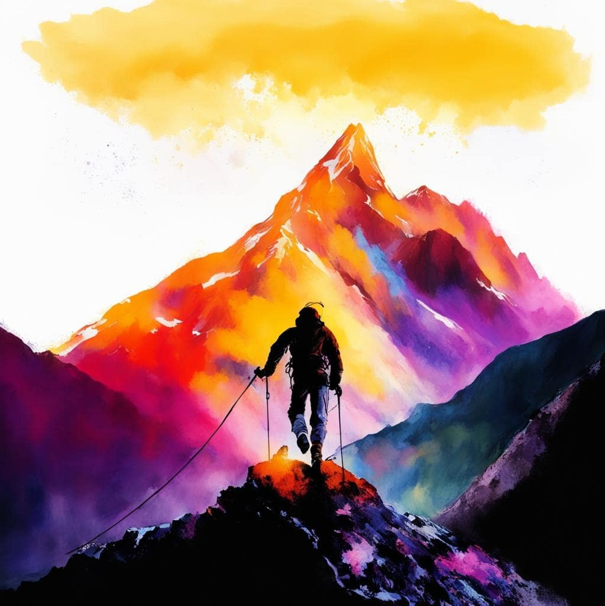

-
Фритрек и нулевой спринт: Подготовка к работе
<ПУТЬ ЕСТЬ ЦЕЛЬ> Это было самое начало пути. На этом этапе важно было проникнуться основами и настроиться на учёбу. И, возможно, подумать, как новые знания могут повлиять на ваше будущее.
Нулевой спринт, отправная точка, дался он мне легко. Поддержка близких была небольшая, но для меня точка невозврата стукнула и назад пути не было.
-
1 спринт: Я — чистый лист
<ДЕДЛАЙН ГОРИТ>На первых этапах мы работали со страхами и сомнениями, которые часто испытывают новички. Один из них — страх перед чистым листом. Это, конечно же, намного сложнее, чем боязнь куска бумаги. Часто за этим ощущением скрываются более глубокие вопросы: с чего начать? а вдруг будет слишком сложно? что, если я не справлюсь?
Выражение, как «я не справлюсь» у меня не было, я поглощал информацию жадно, будто её мне и не хватало. Всё кроме одного «сдача пр-1». Тут мотивация и посыпалась, я перестал что-либо понимать и мне стало страшно открывать редактор кода. И знаете?! Не тут-то было! Я уяснил две вещи, не задавать вопросы — глупо, а второе, нужно просто писать код — остальное приложится.
-
1 спринт: А если не получится?
<ИДУ В БИЗНЕС>Первый проект — позади! Но это всё ещё самое начало пути. Радость могла быстро померкнуть и смениться ожиданием провала. Или вы, наоборот, могли вдохновиться успехами и поверить в себя.
Первый проект расставил все точки над «Й», дал мне кучу мотивации и настроил меня на постоянное обучение, плохо мне — хорошо; Главное не останавливаться — «наше дело правое, осталось дело за малым». Тут я начал менять себя.
-
2 спринт: Погоня за идеалом
<КРЕАТИВ НЕ ДЕСТРУКТИВ>На этом этапе вы уже достаточно разбирались в основах вёрстки, чтобы понять, как много ещё впереди. Вы могли попытаться погнаться за идеалом и понять, что он недостижим. А, может, вы вовсе и не подвержены перфекционизму и вместо того, чтобы сделать идеально, старались просто сделать.
Идеал — не за горами! Измение в себе, дало мне много свободного времени, настроило меня на правильную растоновку приоритетов, да и в целом жить стало не много проще, я как будто начал понимать, что произойдет через час, через день. Жизнь спринтами одним словом!
-
2 спринт: О тех, кто рядом
<ТИПО КРУТОЙ ТЕКСТ>Всё это время вы были не одиноки (хотя, возможно, иногда и чувствовали, что одни против целого мира). Вас окружали одногруппники, команда сопровождения и просто близкие люди, которым можно пожаловаться, если очередной макет просто так не поддавался. Осваивать что-то новое легче, когда рядом есть единомышленники, не правда ли?
Поддержки мало. Но мне она и не нужна в таком количестве, но я осознал это позже, мой основной вид деятельности сейчас, тоже никого невоодушевлял, но я справился и без должной поддержки. Отсюда появился сильный стресс и постоянная неуверенность, но я вспоминаю «Время вперед» Георгия Васильевича Свиридова или «Still Wayting» от Sum 41, что Вам больше по душе.
-
3 спринт: Обходные стратегии
<ПАНИКА ЗАРАЗНА>На этом курсе вы постоянно решали разные задачи. В какой-то момент вам могло показаться, что решения просто иссякли. Значит, пришло время посмотреть на задачу под другим углом.
Жалко, что понимаешь не сразу, что можно всегда сделать по-другому. Главное писать код, а пути решения, исправления и доработки — придут, все-таки не зря я выбрал фронтенд, реинженеринг мое всё.
-
3 спринт: Когда опускаются руки
<ВРЕМЯ ПЕРЕМЕН>Во время учёбы часто возникает чувство, когда не знаешь, за что хвататься. Вроде и проектную пора сдавать, и задачи хочется порешать, и в теории получше разобраться, и жизнь не забыть пожить. В такие моменты очень нужна концентрация. Вспомните, откуда вы её черпали.
Пока я для себя не выбрал ту самую «золотую середину», поэтому на тему ответа дать не смогу.
-
«Сейчас я здесь»
<ЖИВИ И ОШИБАЙСЯ>Сейчас вы уже очень много знаете о вёрстке. Но это только начало. Во-первых, впереди ещё много материала про «красотищу». Во-вторых, с окончанием курса учёба не заканчивается. Вёрстка — это целый мир. И этот мир постоянно меняется. Познать его полностью не получится, но это тот случай, когда важен сам процесс познания. Ведь часто путь — и есть результат.
Видимый результат — очень круто.
Чем усерднее я работаю, тем удачливее я становлюсь.
Гэри Плейер